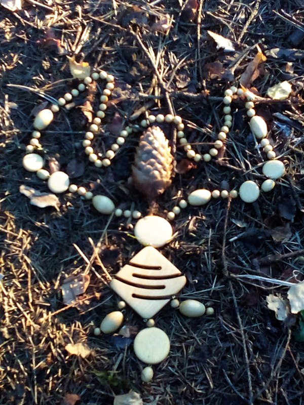

2 Метаморфозе - быть!
Пью черный кофе на кухне, глядя в туманное утро. Зевающая Алла сидит напротив и нехотя доедает оладьи. Час назад я вернулась из зачарованного леса, где собирала ягоды в туманах.
Я была в разных лесах, но такого леса как у нас нигде не встречала. В нем живет тайна. Кое-кто поговаривает, что в лесу мрачно, что он неприветливый, особенно к ночи. Может духи леса их прогоняют? Вдруг моим добрым понимающим друзьям, которые меня охраняют, или вурдалакам, как говорит Эдик, нравятся далеко не все?
- Если меня здесь кто-то слышит, откликнитесь! - мысленно обращаюсь к лесу, - У меня возникла большая проблема - я очень не хочу исчезать бесследно после смерти. Товарищи-вурдалаки, если вы существуете, превратите меня в одну из вас. Я безумно хочу увидеть междумирие.
Помогите, кто может! Я так хочу сохранить сознание и память!
С этими мыслями я бродила по лесу. Понимать ответы леса было невероятно сложно, я лишь выхватывала отдельные слова, которые вспыхивали в моём сознании.
- Инициация...
- Какая инициация, что это такое? Вы говорите, меня ждёт инициация? Ничего не поняла...
- Ты согласна?
- Конечно да!
Мои размышления прервал телефонный звонок. Я достала мобильный из сумочки на поясе.
- Алло
- Привет, солнце! Ну как ты? Когда можно будет тебя навестить?
- Однажды...
Звонил Митя, мой давний школьный товарищ. Кандидат наук, причём настоящих, в отличие от Гарика. Биофизик.
- А чуть поточнее можно? - спросил Митя без тени обиды.
- Нету меня. В спячку залегла. Летнюю. Будь здоров!
И кладу трубку.
Алла недовольно на меня косится.
- Чего это ты с ним так неприветливо?
- Прицепился ко мне, как банный лист, - отвечаю я
- Нельзя же так! Всех кавалеров распугаешь. Ты часом не забыла, что тебе тридцатник? Хочешь старой девой остаться? Я в твоём возрасте уже второго мужа встретила...
И начались предания старины глубокой...
Митька - хороший парень, мой лучший друг. Только чёрт его дернул влюбиться в меня - это всё осложнило.
- Замуж выходи! У Митьки большое будущее! Он же весь мир объездил, везде побывал на конференциях.
Я чуть не подавилась оладушком. Понимаю, она заботится обо мне по-своему. Хочет, чтобы я нашла "женское счастье", вышла замуж. А я чувствую, как мне это поперёк - не моё! Нечестно это! Хочу жить по-своему! К черту этот стакан воды в старости, которым всех пугают, словно страшилкой на ночь. И этот тридцатник, который недавно стукнул.. словно домоклов меч, слышу тиканье внутренних часов, которые говорят - а время-то идёт. Часть человеческой жизни прожита. Что дальше? Вот только стану вурдалакой, мне ничего будет не страшно! Сердцем чую - не моё это, замуж выходить, у меня иная судьба. Нельзя врать себе, делать так, как якобы правильно, как все делают! Это же прокрустово ложе. А я хочу быть собой. Настоящей!
- Ну хорошо, - не унималась звезда нашего посёлка Алла, - а с Борисом-то что? Он ведь был весь из себя такой положительный... Он тебя замуж звал, а ты его мокрым полотенцем...
- Слишком много о себе возомнил, - отвечаю.
Вспоминаю с горечью: хороший был человек, добрый, как и Митька. Моя вина, что я сразу не разобралась в себе и дала ему повод на что-то надеяться. А мокрое полотенце - это моя выдумка. Просто как объяснишь Алле, что при всей его мужской привлекательности я не ощутила душевную близость.
- Он мне показывал на фотографии золотое обручальное кольцо, которое хотел тебе подарить. Советовался со мной, - сказала тетя, - заботливый. Денег не жалел.
- А по мне - мещанство это! - отвечаю, - кольца эти все! Я ему сказала - хочешь подарить мне кольцо, сделай своими руками. Вырежи из деревяшки... из фольги сделай, в конце-концов, коли не умеешь вырезать. Для меня нет ничего дороже, чем созданное своими руками.
- Ну ты чудная! - нахмурилась Алла
- И я не хочу обычную свадьбу с пьянкой в ресторане.
- А чего же ты хочешь?
- Квест, приключенческую игру, в которой надо разгадать множество загадок, в результате самому найти все недостающие элементы и собрать своё кольцо. Побродить по стране чудес, посидеть за столом с мартовским зайцем и сумасшедшим шляпником. В наше время такие штуки часто организуются на праздники. Ведь это же какая память на всю жизнь! А голодных родственников можно вывести в ресторан отдельно...
- Ты вроде взрослая девочка... всё больше и больше меня удивляешь.
Видимо, для Аллы слово "взрослый" означает стандартный, серьезный, живущий как все. А для меня это понятие в первую очередь связано с ответственностью.
Я доела оладьи и попыталась как можно быстрее смотаться, чтобы не слушать нудные разговоры о моей печальной участи старой девы.
К вечеру я навестила Фазенду, чтобы сделать Клавдии укол, а заодно выловить Эдика и поговорить с ним.
- Ты не знаешь, что такое инициация? - спрашиваю, когда отозвала Эдика в сторону.
- А что тут знать? - на лице Эдика появилась кривая усмешка, - Они кусают человека, он становится одним из них. Происходит инвазия. Внешне он человек, а внутренне - вампир.
- Класс! А если я попрошусь к ним? Могу и я стать одной из них?
- Ты с ума сошла! Замолчи! Услышат ведь! - шикнул на меня Эдик
- Как услышат? Они же в лесу!
- Если уж кого заприметили - начинают ходить по пятам, проникают во сны и уводят в междумирие, - сказал Эдик с видом компетентного специалиста в данном вопросе.
А я между тем задаюсь вопросом:
Какие вурдалаки, мы же современные люди! Почему я втягиваюсь в эту игру? Просто пытаюсь уцепиться за любую, пусть даже самую бредовую идею, только бы выбраться из клетки? Видимо, рано я Эдуарда Аркадича в здравомыслящие записала. Но оно и понятно - в отличие от Гарика и Роберта, которых знаю с незапамятных времён, с Эдиком я познакомилась лишь в этом году. Лет пять назад, а то и больше, я уже приходила делать Клавдии уколы. Но тогда ещё у нее была память и я верила, что она поправится. Она никогда не жаловалась на жизнь и, казалось, просто ненадолго прилегла отдохнуть. После укола читала мне стихи на французском. А Гарик с Робертом и Максом всё так же сидели за столиком с бокалами красного вина или с коньячком и всё так же говорили на одни и те же темы, изображая из себя клуб интеллектуалов. С подачи Роберта могли целыми часами обсуждать писателя, который описывал кружевную салфеточку на десяти страницах, при этом раскуривая длинные ароматные сигары. Одно не пойму, что привлекает Эдика в их компании? Влечёт сюда каждый вечер. Неужели какие-то тайные дела с Гариком? А может, всё проще? Эдик просто одинокий инвалид, ему хочется побыть рядом с живыми людьми, даже такими чудаковатыми. Хотя, он и сам чудной. Может, его болезнь и чудачество здесь не так бросаются в глаза, никто не стремится ему постоянно помочь, не проявляет фальшивого сострадания?
- Я так хочу попасть в междумирие! Пусть инициируют.
- Никогда этого не делай. Да и не согласятся они - ты для этого старовата. Эту процедуру проводят с детьми или подростками. А тебе уже тридцатник.
"Сам ты старичок", - фыркнула я мысленно.
Прозвучало обидно. Я себя чувствовала на восемнадцать!
- Но я лишь спрошу. Вдруг возьмутся, - говорю
- Зачем это тебе? Ну вот что за бес тебя попутал? - проворчал кудрявый темноволосый мужчина плотного телосложения.
- Я чувствую, мне необходима трансформация, я получу силу их мира и смогу побывать в междумирии.
- Увы.. да, это так и достигается. Но это очень тяжёлая процедура.
- Сегодня они произносили слово инициация.
- И что сказали?
- Я не поняла…
Эдик нахмурился.
- Тебе наверняка сказали - инициации не будет, проваливай.
- Нет… они говорили в позитивном ключе.
- Ладно! Делай чего хочешь! Пусть кусают! Только в лес не ходи. В эти лунные ночи крышу им сносит.
- А это больно?
- Это длительная процедура. За один раз это делать нельзя, иначе ты не выживешь. Месяца два. Если всё выпьют разом - наступит энергетическая смерть.
- Меня предупредили, что будет нелегко.
- Ну-ну
- Не возьмутся - сама сделаю! Без помощи! Но своей цели достигну - разгадаю загадку, зачем я здесь, доберусь до стыка миров и увижу, что там!
- Не всем все дано, - заметил Эдик философски.
- Ты в меня не веришь! - воскликнула я, - ну и к черту! А я это сделаю! Я смогу, слышишь! Я смогу найти способ. Я не могу, как раньше! Я не могу жить как все! Я всю жизнь к этому шла. Чувствую невидимый мир рядом, я не могу просто закрыть на это глаза! Я хочу Увидеть!
- Делай, что знаешь, - ответил Эдик с досадой и устало побрел налить себе чаю.
Смеркалось. Я вернулась домой, приняла душ и забралась под одеяло на моём втором ярусе под потолком.
Неужели это неправда? Неужели не возьмутся? Я же не могу иначе...
Отчаяние достигло такого уровня, что я ощутила: желание трансформации настолько сильно, что оно встало между жизнью и смертью. Мне и вправду было уже все равно - жить или умереть. Лёжа под одеялом, я осознала, что готова на всё, бросить все силы, с чужой помощью или без, но трансформацию провести. Чем бы это ни кончилось. Да будет так!
- Ты готова умереть ради метаморфозы? - услышала я шёпот внутри себя
- Да!
И в этот момент горячая волна пробежала по позвоночнику. Затем огненный столб начал подниматься, обжигая изнутри. Что это? Смерть? Дверь в бессмертие? Вселенная услышала мой крик?
На секунду я словно увидела мир с высоты птичьего полета, многое стало кристально ясно, а главное - я отчётливо осознала: метаморфоза началась! Все получится!
